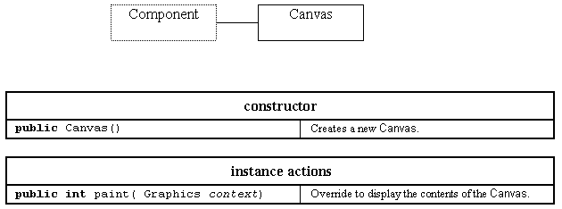

The Canvas class

The Canvas class does not have an established behaviour.
It can be used as a location for graphical output but is more usually sub-classed to provide specialised user interface Components.
To produce output on a Canvas the sub class should override the Component paint() action and use the Graphics context passed as an argument to draw onto the window. It should not call paint() directly but should instead call the repaint() action which will schedule a call of paint() on a separate thread as soon as possible. The repaint() action calls update() before it calls paint() to allow update() to clear the window first. If it is not required to clear the window update() should be overridden to call paint() directly.